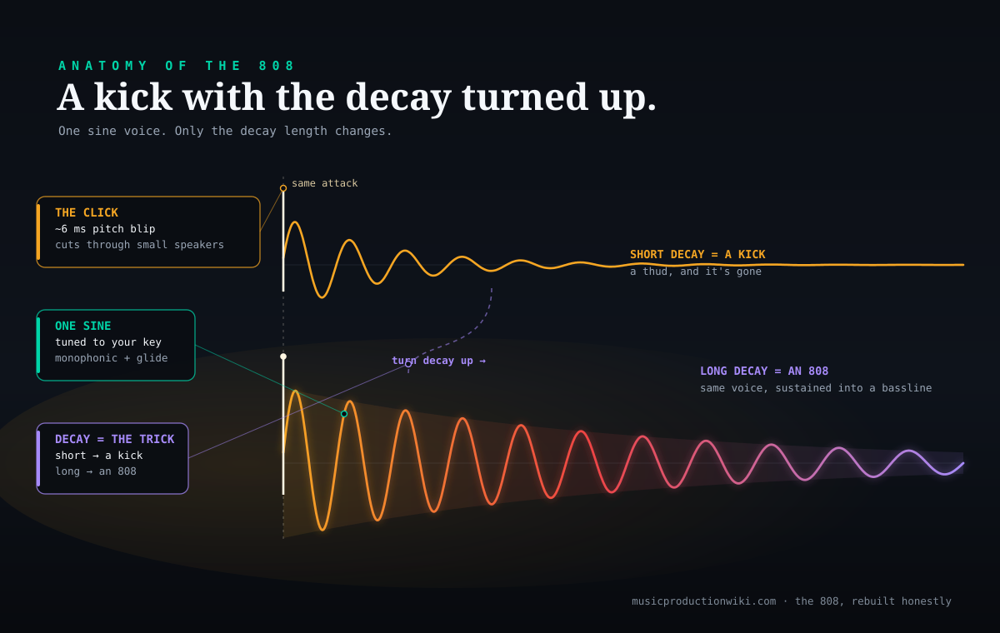
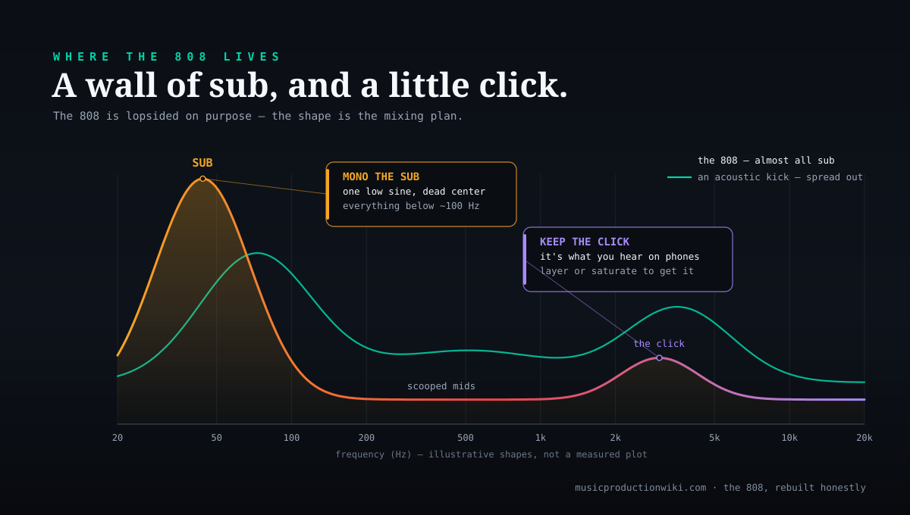

Ask ten producers what an 808 is and you will get two answers, both correct. One points at a machine: the Roland TR-808, a drum machine from 1980 that sold badly and was left for dead. The other points at a sound: the deep, sustained, tuned kick that carries the low end of almost every trap, drill and modern pop record. The word does double duty because the sound came out of the machine — and the single most useful thing you can learn about it is that an 808 is not a bass patch at all. It is a kick drum, stretched long and tuned to a note, so that one voice is the kick and the bassline at the same time. This guide rebuilds that sound honestly: what the TR-808 actually does, which parts carry the character, and how to get all of it from a stock synth you already own. Like the reese bass and the 303 acid line, the 808 turns out to be far more obvious than mysterious once you know where the sound lives.
The Roland TR-808 Rhythm Composer was built by Roland between 1980 and 1983 under founder Ikutaro Kakehashi. “TR” stands for Transistor Rhythm: unlike its rival the Linn LM-1, it synthesises its sounds from analog circuits rather than playing samples, and Kakehashi deliberately used faulty transistors for its distinctive sizzle. It was a commercial failure — roughly 12,000 units before it was discontinued when its semiconductors became impossible to restock, succeeded by the TR-909 in 1983 — then found a cult following on the cheap used market. Its bass drum is a single voice: a trigger pulse excites a bridged-T filter network into self-oscillation, ringing as a decaying near-sine whose length is set by a decay control, with a brief pitch blip at the attack and a low-pass filter and VCA after it. Producer Rick Rubin popularised lengthening that decay and tuning it to pitches to play basslines; because the hardware could not transpose directly, the tuned-bassline move came from sampling one note and playing it across a keyboard. Sources: Wikipedia “Roland TR-808”; Werner, Abel & Smith, “A Physically-Informed… Model of the Roland TR-808 Bass Drum Circuit,” DAFx-14 (CCRMA, Stanford); Baratatronix TR-808 circuit analysis.
Who engineered it. The 808 is very often credited to a single “chief engineer,” usually Tadao Kikumoto (who did design the later TB-303 and TR-909). Roland’s own accounts credit chief engineer Makoto Muroi, with the analog voice circuits attributed to “Mr. Nakamura” and the software to “Mr. Matsuoka.” Treat any single-name attribution with care. Also disputed: which famous records are “808s.” Song lists routinely blur the two meanings of the word — Whitney Houston’s “I Wanna Dance With Somebody,” for instance, uses the 808 machine’s percussion, not the tuned melodic 808 bass this guide is about. And the idea that “an 808” is one specific plugin or preset is simply false: it is a technique, reproducible many ways. Sources: Roland TR-808 development history; Wikipedia “Roland TR-808” references; Dubspot “What Is an 808?”
The exact tuning, decay length and processing of the 808 on any specific record. No official patch sheets exist; a modern melodic 808 typically lives around 30–50 Hz at its fundamental, but that is a defensible general range, not a documented per-song value. Any “the 808 in this track is tuned to X with Y milliseconds of decay” you see online — including the settings in this guide — is a starting point for your ear, not a measured fact.
It’s a pitched drum, not a bass patch
The reframe that makes everything else click is this: an 808 is a drum you tuned. On the original machine, the bass drum was meant to be a drum — a short, punchy thud on the downbeat. Producers discovered that if you lengthen its decay and set it to a musical pitch, it stops being percussion and becomes a bass instrument that happens to land like a kick. That is the entire idea, and it is why the same sound is spoken about as both a kick and a bassline. You program it melodically, moving it up and down to notes like a bassline, but every note still hits with the weight and transient of a kick drum. One voice, two jobs.
This matters because it tells you exactly where to spend your effort and where not to. Producers who go hunting for a magic 808 preset, or who stack oscillators and layers trying to make it “bigger,” are working against the sound. The 808 is defined by simplicity: a pure low fundamental and a short click, tuned and stretched. Everything that makes it powerful — the tuning, the decay, the translation click, the way it shares space with the kick — is a decision about that one simple voice, not a hunt for a secret ingredient. If you have recreated a signature sound with us before, you already know the pattern: the famous part is rarely the part people obsess over. The gated snare turned out to be about compression and a gate, not a reverb preset; the 808 turns out to be about a decay knob and a tuning knob, not a plugin.
It is also worth being precise about the word itself, because it causes real confusion. “808” means both the drum machine and the tuned sub-bass sound it inspired, and those are not the same thing. The machine has a whole kit of voices — cowbell, hi-hats, snare, claps — and plenty of classic records use its percussion without any melodic bass at all. When most people say “the 808” today, though, they mean the boom: the deep, sustained, tuned kick that plays the bassline. This guide is about that second meaning — the melodic 808 — while being honest that it grew out of the first.
From a failed drum machine to the sound of modern low end
The 808 was never designed to make the sound it is now famous for. Roland’s founder Ikutaro Kakehashi wanted an affordable box that let songwriters build a rhythm track without hiring a drummer or booking studio time. To keep the price down, the engineers skipped the sampling route their rivals were taking and generated every sound from analog circuitry — no recordings, just transistors, filters and envelopes. That decision is the whole reason the 808 sounds like nothing else: it does not imitate a real kit so much as offer a set of electronic caricatures of drums, and its bass drum in particular is a synthesiser voice pretending to be a kick. Kakehashi even bought deliberately faulty transistors to get the machine’s characteristic sizzle, a detail that tells you how much of its charm is happy accident.
When it launched in 1980 it was a flop. Electronic music had not gone mainstream, and most producers wanted realistic drums, which the 808 conspicuously did not provide — its sounds were called clicky, robotic, toy-like and spacey. Roland built around 12,000 units and discontinued it in 1983 once the semiconductors it relied on ran out, replacing it with the more realistic TR-909. And exactly like the TB-303 that followed it, that failure is the reason the sound exists. Because nobody wanted them, 808s were cheap on the used market, and cheap gear is what emerging hip-hop, electro and dance producers could afford. What sounded “wrong” to a rock engineer sounded like the future to a kid making beats in a bedroom.
The pivotal move — the one that turned a drum machine into a bass instrument — is generally credited to producer Rick Rubin, who popularised stretching the bass drum’s decay and tuning it to different pitches to play actual basslines. There is a wrinkle worth knowing: the original hardware could not transpose its bass drum directly, so the technique really took hold once producers sampled a single 808 kick and played that sample across a keyboard, letting its long sine tail become a pitched instrument. From tracks like “Planet Rock” in 1982 onward, the 808 spread from electro into Miami bass, then into hip-hop at large, and eventually became the foundational low end of trap, drill and a huge amount of pop. The machine that failed as a fake drummer became the most-used drum machine in the history of hit records, almost entirely on the strength of one voice used the wrong way.
How the bass drum actually makes its tone
To recreate the 808 well it helps to know, in plain terms, what its bass drum circuit is doing, because the modern sound is a direct descendant of it. Inside the machine, a trigger pulse briefly kicks a small analog circuit — a bridged-T network — into self-oscillation. Like pushing a pendulum once and watching it swing, the circuit rings on its own at a low frequency and then dies away, and the shape it rings in is very close to a pure sine wave. That decaying sine is the body of the 808: a clean, deep, round low tone with almost no harmonics of its own. Everything modern producers do to an 808 is, at heart, shaping that one decaying sine.
Two smaller details give the sound its punch and its life. First, at the very start of the note there is a fast transient where the pitch blips upward for just a few milliseconds before settling — too brief to hear as a pitch change, but enough to add a snap to the attack. That is the “click” you feel at the front of a good 808 kick. Second, as the note decays, the pitch drifts very slightly downward — a gentle “sigh” that some engineers believe was not even intentional, a quirk of the circuit leaking a little voltage over time. Both of these are reproducible in a modern synth with a short pitch envelope, and both are part of why a naive sine bass sounds sterile next to a real 808. After the oscillating core, the signal passes through a low-pass filter for tone and a VCA for level — the same simple shaping any subtractive synth voice gets.
The one control that changed music is the decay. On the machine, turning up the bass drum’s decay lengthens how long that sine rings before fading — and it is precisely this knob that lets the kick become a bass. Circuit analyses of the 808 put its bass-drum decay range at roughly fifty milliseconds at the short end to several hundred at the long end; stretch it past that in a sampler or synth and the sine simply keeps ringing as a sustained bass note. Understanding this is the difference between fighting the sound and working with it: an 808 is not a kick with a bass layered under it, it is a kick whose own tail has been extended until the tail is the bass.

The diagram above is the entire “kick becomes bass” idea in one picture. Both notes start identically — the same instant attack, the same punch. The teal shape is a drum: it falls away fast, so you hear a thud. The purple shape is an 808: the same note, but the decay is stretched so the tone rings on as a sustained bass. Nothing else about the sound has changed. That single parameter is why an 808 can be both percussion and a melodic bassline depending on how far you turn one knob, and it is the first thing to reach for when you build one from scratch.
Tuning it to the key: the melodic 808
Once the decay is long enough to sustain, the second defining move is tuning. A short kick has a pitch, but it is over so fast that the pitch barely registers; stretch that same note out and suddenly its pitch is doing musical work, holding under your chords for a whole beat or more. That is what makes a modern 808 a “melodic” instrument: you set its root note to the key of your track and then write it up and down like a bassline, choosing notes that support the harmony. Get the tuning wrong — leave the 808 on some arbitrary pitch — and it will clash with everything, sounding muddy and out of tune even if every other element is perfect. Tuning to key is not optional polish; it is the difference between a bassline and a low-frequency problem.
Because a real 808 is one voice, you write it monophonically: one note at a time, never a chord. This is a feature, not a limitation. A single sustained low note is clean and powerful; two low notes at once turn to mud almost instantly because the sub frequencies interfere. When you want movement — a note that bends up or down into the next, the way modern trap and drill 808s glide — you use a short glide or portamento between overlapping notes, which is the direct descendant of the way producers slid sampled 808s around a keyboard. Those glides are a huge part of the contemporary sound, and they are trivial to add: set a short glide time and let two notes overlap, and the 808 slides from one pitch to the next instead of restarting.
There is a useful parallel to the reese bass here, and it is worth stating plainly because producers mix them up: an 808 is not a reese. A reese is a detuned, moving, mid-heavy sound built from beating oscillators; an 808 is a single clean sine tuned to a note. They live in different parts of the spectrum and are built on opposite principles. If your “808” sounds buzzy and wide, you have drifted toward a reese; a true 808 is narrow, deep and centred. Keeping that distinction clear is half of getting the sound right.
The click: why an 808 needs an attack to translate
A pure tuned sine has a problem: it lives almost entirely in the sub, and most speakers cannot reproduce the sub. On a laptop, a phone or a pair of earbuds, a bare sine 808 more or less disappears, because there is nothing in the audible range for those speakers to move. The records solve this with a short, sharp attack at the front — the click — that sits well above the sub and gives small speakers something to reproduce. Your ear then does something clever: it hears the click and infers the sub even when it cannot physically hear it, so the 808 still reads as “bass” on a phone. Getting this click right is what makes an 808 translate across every playback system instead of only booming on a subwoofer.
There are two ways to supply that click, and most producers use both. The first is the 808’s own attack transient — the fast pitch blip and the initial snap of the note, which you can emphasise with a touch of saturation or a slightly faster amplitude attack. The second is to layer a separate short, punchy kick on top of the 808, tuned and timed so its transient lands exactly with the 808’s attack. That layered kick handles the punch and the high-frequency click, while the 808 handles the sustained sub — a division of labour that is standard in trap and drill. The two must be tightly aligned or you get a flabby double-hit; when they lock together, the result is a single sound that punches on small speakers and rumbles on big ones.
Where an 808 lives: almost all sub, plus a click
It is worth seeing the 808’s tonal balance next to a normal acoustic kick, because they are shaped completely differently, and that difference explains most of what you have to do to make an 808 sit in a mix. An acoustic kick spreads its energy across the spectrum: some sub, a lot of low-mid “body,” and a bright beater click up top. An 808 is lopsided by design — a towering peak of sub-bass energy down around thirty to fifty hertz, very little in the mids, and a small spike of high-frequency click. It is almost all fundamental. That is why it is so powerful and so easy to get wrong: there is enormous energy in a region you can barely hear, and almost nothing in the region where small speakers and cheap headphones actually live.

Read practically, this picture is a to-do list. Because almost all the 808’s energy is sub, you have to protect that region — nothing else in the mix should be competing down there, which means high-passing your other elements so the 808 owns the low end alone. Because it has almost nothing in the mids, you add harmonics with saturation so it has a presence that survives on small speakers. And because its one loud region is inaudible on most devices, you rely on the click and on those added harmonics to carry the sense of bass everywhere else. Every standard 808 mixing move follows directly from this lopsided shape.
Making it sit: kick, sidechain, saturation, mono sub
An 808 that sounds huge in solo can vanish or turn to mud in a full mix, and the fixes are consistent enough to treat as a checklist. The first and most important is space: because the 808 dominates the low end, everything else needs room made for it. High-pass pads, keys and even some percussion so they stop crowding the sub, and the 808 immediately sounds bigger without you touching it. This is the same discipline you would apply when you mix any bassline, just more extreme, because an 808’s sub is more dominant than most.
The second is the relationship between the kick and the 808, which is the classic low-end conflict. When a punchy kick and a sustained 808 hit at the same time in the same frequencies, they fight and both lose weight. The usual solution is sidechain compression: duck the 808 briefly each time the kick hits, so the kick’s transient punches through cleanly and the 808 rushes back in behind it. Alternatively, some producers simply tune the kick and 808 to complement each other and time them so they interleave rather than collide. Either way, the goal is that you hear both the punch and the sustain, not a muddy lump.
The third is harmonics, and it is where a lot of “why is my 808 weak” problems are solved. A little distortion or saturation on the 808 generates upper harmonics from that pure sine, which does two things at once: it thickens the sound and, crucially, it gives the 808 a presence that survives on speakers that cannot reproduce the sub. Start gentle and push until the 808 reads clearly on your laptop speakers, then back off slightly. Finally, keep the sub itself mono — below roughly a hundred hertz, stereo information wastes energy and can cause phase problems on club systems — so collapse the low end to mono and let width live higher up. Space, sidechain, saturation, mono sub: get those four right and a plain 808 becomes a record-ready one.
Recreate it: stock synth first, then the shortcuts
You do not need any special software to build a convincing 808. Any synth with a sine oscillator, a pitch envelope and an amplitude envelope will do it, and the result is genuinely as good as a dedicated plugin because the sound is so simple. The route diagram below lays out the honest options in order of cost, and the top row — free and in the box — is the recommended default, not a fallback.

To build one in a stock or free synth, the steps are short. Load a single sine oscillator. Route a fast, short pitch envelope to it so the note blips up a little at the very start and settles — that is your attack punch and the ghost of the 808’s pitch sigh. Set the amplitude envelope to an instant attack and a long decay with little or no sustain, so the note rings out as a sustained bass rather than a short kick. Tune the oscillator low, set its root to your key, and write a monophonic bassline, adding a short glide on the notes you want to slide between. Then add a click — either by emphasising the attack or layering a short kick — saturate for harmonics, and sidechain against your kick. Vital, which is free, does all of this cleanly; if you own Serum 2 it is equally capable, and our Serum 2 versus Vital comparison covers which suits you. Any of the instruments in our best synth plugins roundup will get there.
If you would rather not build from scratch, dedicated 808 instruments exist and they are a real convenience. On the free side, BD-808 and the circuit-modelled DB-808 give you a tunable 808 bass drum in one click, and Vital covers the from-scratch route at no cost. On the paid side, SubLab and SubLab XL are built specifically around the modern 808 — a sub synth plus a sample layer plus an attack, which is exactly the anatomy above — and 808 Studio is a focused alternative with glide and distortion baked in; our best 808 plugins roundup compares them properly, and many producers simply build custom 808s in a good synth instead. For the hardware feel, Roland’s own TR-8S and Cloud TR-808 use ACB modelling of the original circuit, giving you tune and decay controls straight from the machine. Whichever you pick, the technique is identical — the tool is a matter of budget and workflow, as our Vital review makes clear for the free end of the spectrum.
The same move, anywhere
The reason it pays to learn the 808 as a technique rather than a preset is that the technique travels. “A tuned, stretched, pitched drum” is not only an 808 idea — it is a way of thinking that unlocks a whole family of sounds. Any percussive sample with a pitch can be stretched and tuned into a bass: a tuned tom, a tuned clap tail, a resonant snare. The 808 is the most famous example of the principle, but the principle is what you actually want to own, because it lets you invent low-end sounds nobody has a preset for.
Within its own lane, the melodic 808 is now the backbone of an enormous amount of music. It drives the low end of trap and drill, where the glides and the tuning carry the melody as much as the lead does. It anchors a great deal of modern beat-making and pop, where a clean sub 808 sits under everything. It appears, softer and rounder, in lo-fi hip-hop and R&B. Learning to build and tune one well is one of the highest-leverage skills in contemporary production, precisely because so many genres lean on it. And the mixing lessons — carving space, taming the kick relationship, translating with harmonics — transfer to every bass sound you will ever place in a mix, not just this one.
There is a compositional lesson hiding in here too. Because an 808 is both rhythm and pitch, writing one teaches you to think about a bassline and a kick pattern as a single decision rather than two. Where the 808 lands is the groove; what note it lands on is the harmony; how it glides between notes is the phrasing. That fusion — treating the lowest voice in the track as one instrument that is drum and bass at once — is a genuinely modern way of writing, and once you internalise it you hear it everywhere. The 808 is the most famous teacher of that idea, but the idea outlasts the sound.
What you can’t perfectly clone — and why it barely matters
Honesty demands a limit. A couple of things about an original TR-808 will not come out of a stock synth exactly. The most cited is the sizzle from those deliberately faulty transistors — a specific analog grit that came from imperfect components Roland could not even restock, which is part of why the machine was discontinued. Real units also vary from one to the next: component tolerances and age mean no two original 808s sound quite identical, so even “the real thing” is not a single fixed sound. And the exact processing chains on the classic records — the specific saturation, compression and EQ each producer used — are undocumented and were often idiosyncratic.
But here is why none of that should stop you. The perceptual 808 — the tuned sub, the click, the glide, the weight — is fully reachable in a stock synth, and in a busy mix nobody alive can tell a well-made 808 from a “real” one, because the thing carrying the sound is a sine wave and a decay, both of which are trivial to reproduce. More importantly, the part that actually matters — the tuning, the writing, the mixing decisions — is entirely transferable and entirely yours. The faulty transistors are unrepeatable; the musicianship of placing a tuned sub under a track is a skill you keep for life, on any instrument. That is a far better trade than chasing a grit that even two original 808s do not share.
Do you need to clear anything?
No. Recreating the 808 sound from scratch — your own synth, your own tuning, your own bassline — is entirely your own production, and there is nothing to clear. The only time rights would enter the picture is if you sampled an actual record that used an 808, which is a completely different task and not what this is. Build and tune 808s freely and put them in whatever you like.
Build the skill: 3 drills
Run these in order. The first proves the 808 is a trivially simple synth so you stop hunting for a preset; the second trains the tuning and glide that make it musical; the third forces you to confront translation and the kick relationship so they become automatic.
- Open Vital (or any synth). Load one sine oscillator — just one. Set the amplitude envelope to instant attack, no sustain, and a very short decay. Play a low note: you have a kick.
- Now lengthen the decay until the note rings out for a beat or more. Play the same note: it is now a bass. That single change is the entire “kick becomes 808” idea, done with one knob.
- Add a fast, small pitch envelope so the very start of the note blips up in pitch. Listen to the snap it adds at the front — that is your attack click, and the ghost of the real 808’s pitch sigh.
- Set the oscillator’s root note to the key of a beat you are working on. Write a short, monophonic 808 bassline — one note at a time, moving to notes that support your chords. Notice how wrong it sounds the moment a note is out of key.
- Turn on a short glide (portamento) and let two notes overlap. Hear the 808 slide from one pitch into the next — the signature modern trap and drill move.
- Try to play two notes at once. Listen to the mud. Confirm for yourself why an 808 is monophonic, then go back to one note at a time.
- Play your 808 through your laptop or phone speakers. It probably vanishes. Add saturation until it reads clearly on those speakers, then layer a short punchy kick on the attack and align them tightly.
- Sidechain the 808 to duck briefly under the kick. A/B it: with the ducking, both the punch and the sustain are audible; without it, they fight.
- Collapse everything below about 100 Hz to mono and high-pass your other elements off the sub. Check the mix on both small and large speakers — the 808 should now punch everywhere and rumble on the big system.
The mistakes that make it sound wrong
The most common failure is leaving the 808 out of key. Because it is almost pure sub, an out-of-tune 808 does not sound “a little off” — it turns the whole low end to mud and makes an otherwise good beat feel broken. Always set the root to your track’s key and write melodically. The second failure is stacking: reaching for extra oscillators, chords or layers to make the 808 “bigger,” when a single tuned sine is correct and thickness comes from saturation, not from more voices.
The third failure is a pure sine with no click, which sounds enormous on a subwoofer and disappears on everything else — add an attack transient or a layered kick so it translates. The fourth is letting the kick and 808 fight: two sustained low sounds hitting together with no sidechain or tuning relationship will always rob each other of punch. And the last is neglecting mix space — if pads, keys and percussion are allowed to crowd the sub, the 808 has nowhere to sit. When you mix the low end, give the 808 the sub to itself, keep it mono down low, and let harmonics carry it up top. Fix those five and a thin, muddy 808 becomes a clean, powerful one.
Frequently Asked Questions
An 808 is the Roland TR-808’s synthesized kick drum with its decay stretched long and its pitch tuned to a note, so a single voice works as both the kick and the bassline. The character is a pure low sine fundamental plus a short click at the front; the “melodic 808” is that sound played across a keyboard.
Both, at once — that is the whole point. On the original machine it was a bass drum; producers lengthened its decay and tuned it to a pitch so it became a sustained bass instrument that still lands like a kick on the downbeat. You write it like a bassline, but it hits like a kick.
Yes. Any synth with a sine oscillator, a pitch envelope, and an amplitude decay will build one — Vital (free) does it from scratch, and free dedicated tools like BD-808 or the circuit-modelled DB-808 give you an 808 in one click. The paid instruments are conveniences, not requirements.
An 808 is monophonic and pitched, so set its root note to your track’s key and write the bassline melodically. Most 808 tools and samplers have a tune control; you can also play an initialized synth alongside to find the key by ear. Matching the key is what stops the 808 from clashing with the rest of the mix.
Small speakers cannot reproduce sub-bass, so a pure sine 808 vanishes on them. The fix is harmonics: add a short click or a punchy kick layer at the front, and saturate or distort the 808 so it generates upper harmonics your ear reads as “bass” even when the fundamental is inaudible.
Usually, yes — when a kick and an 808 occupy the same low frequencies they fight and lose punch. Ducking the 808 briefly under the kick with sidechain compression, or tuning and timing them to share space, lets both hit cleanly. Keeping the sub mono below about 100 Hz helps too.
No. Original units are rare collector items. A stock synth or a free plugin gets the perceptual 808 sound; Roland’s own ACB-modelled TR-8S and Cloud TR-808, or dedicated instruments like SubLab, get you closer to the hardware feel if you want it.
Not always. The word “808” means two things — the original drum machine and the tuned sub-bass it inspired. Many early hits use the 808 machine’s percussion; the melodic, stretched, tuned 808 bassline is a later evolution. When a song list calls something “an 808,” check whether it means the box or the bass.